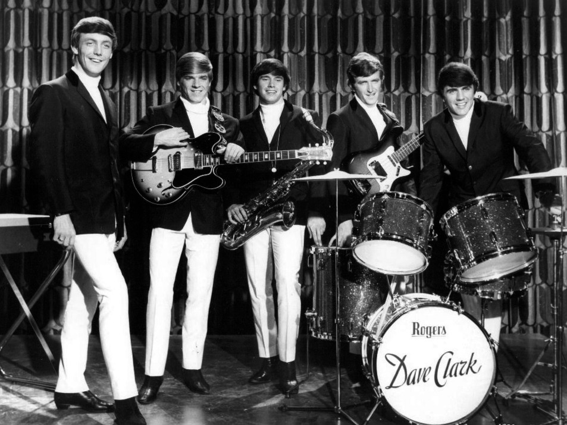

Glad All Over gave the Dave Clark Five their first British number one.
It ended the Beatles' run at the top of the UK chart.
It also gave a Tottenham dance band its identity, a stomping beat football crowds still sing today.

Table of Contents
- Writing an Original After "Do You Love Me"
- Recording the Tottenham Sound
- Knocking the Beatles Off the Top
- FAQ
Writing Glad All Over After the "Do You Love Me" Setback
In late 1963 the Dave Clark Five put out their own version of "Do You Love Me".
It stalled at number 30 while Brian Poole and the Tremeloes took the same song to number one.
Dave Clark drew a hard lesson.
The money was in writing and publishing your own songs, not covering other people's.
He told the band they would record originals from then on.
He asked singer and organist Mike Smith to find a title worth building on.
The Carl Perkins Title
Smith went digging through his own record collection.
He landed on a 1957 Carl Perkins single called "Glad All Over" and kept only the phrase.
Clark and Smith wrote a new song around it in a matter of minutes.
"Your best songs are the ones you seem to do very quickly," Clark said.
The track built to a call-and-response chorus, the band shouting the title back over a booming downbeat.
Recording the Tottenham Sound at Lansdowne Studios
The band cut the single at Lansdowne Studios in London in September 1963.
Clark produced it himself and hid behind a pseudonym on the label, "Adrian Clark".
The name blended his own with that of engineer Adrian Kerridge.
He did not want to look like he ran everything.
How They Built the Stomp
Clark pulled the front skin off his bass drum and put the microphone inside, packed against a blanket.
The thump came from hard hits on the floor toms and the kick together.
A Vox Continental organ, heavy tape echo, and reverb off the studio stairwell filled in the rest.
The record was mixed in mono and stayed that way for years.
"Mono just had its own dynamic," Clark said.
"It was forceful and powerful, and loud."
Knocking the Beatles Off the Top of the Chart
Columbia released the single in Britain on 15 November 1963.
It climbed slowly, sitting behind "I Want to Hold Your Hand" for three weeks.
On 16 January 1964 it reached number one and knocked the Beatles' single off the top.
British sales passed a million copies by the end of 1964.
At the peak the band reckoned it was selling around 180,000 copies a day.
America and The Ed Sullivan Show
Epic put the single out in the United States over Christmas 1963.
The Dave Clark Five played "The Ed Sullivan Show" on 8 March 1964.
That was a month after the Beatles stood on the same stage.
Clark had turned the booking down at first, since the show did not air in Britain.
A bigger fee changed his mind.
The single rose to number six on the Billboard Hot 100 that spring.
It also went to number one in Ireland and New Zealand.
From the Charts to the Football Terraces
In January 1964 a radio producer named John Henty played the record over the tannoy at Selhurst Park.
Crystal Palace fans took to it at once.
It still opens every home game and blasts out after Palace goals.
Other bands kept it going too.
Hush had an Australian top ten hit with it in 1975.
The Rezillos cut a punk version in 1978.
FAQ
Who wrote the song?
Dave Clark and Mike Smith wrote it in 1963.
Smith took the title from an old Carl Perkins single.
The pair built a brand new song around it.
Did it really knock the Beatles off number one?
Yes.
It hit number one in the UK on 16 January 1964.
That knocked off the Beatles' "I Want to Hold Your Hand".
It stayed on top for two weeks.
What is the Tottenham Sound?
It was the press label for the Dave Clark Five's heavy, stomping beat.
The name came from the north London district where the band formed.
The sound leaned on pounding drums, saxophone, and Mike Smith's belted vocals.
Why do football fans sing it?
Crystal Palace adopted the record at Selhurst Park in January 1964.
It is still the club's matchday anthem, and other clubs have borrowed it to celebrate goals.
How well did it do in America?
It reached number six on the Billboard Hot 100 in the spring of 1964.
It was the band's first US hit, helped by their debut on "The Ed Sullivan Show" that March.
The Dave Clark Five never quite shook the label of second British band through the door.
Their catalogue later vanished for decades while the Beatles stayed in view.
The full story of that rise and fall sits in the Dave Clark Five profile.
It runs next to the wider British Invasion scene.
Back to the 1960smusic.net homepage for more of the decade.
More than sixty years on, a football crowd somewhere still sings Glad All Over every week.